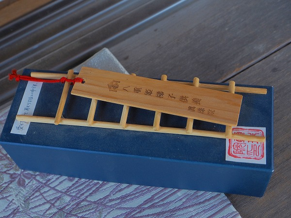
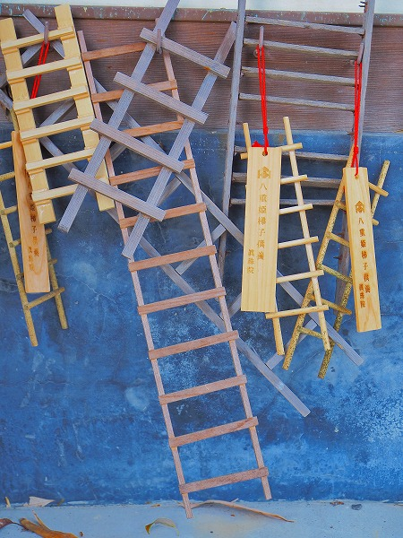

願成就院のすぐ近くに
八重姫御堂という小さなお堂がある。
場所は
眞珠院という曹洞宗のお寺の境内。
正面に眞珠院の本堂が見えるがその手前、山門を潜ってすぐ右手にそのお堂はある。
これがその八重姫御堂。
八重姫とは北条政子と結婚する前に
源頼朝との子を儲けた女性だ。
ちなみに大河ドラマ「鎌倉殿の十三人」ではガッキーこと新垣結衣が演じていた（観てない人スミマセン）。
八重姫はこの地方の武将、伊藤祐親の娘で、祐親が京都にお役目で滞在している間に流人であった頼朝といい仲になっちゃった。
そして
千鶴丸という子供を儲ける。
京都より帰って来た伊藤祐親は大激怒、平家寄りの武将だった事もあり
八重姫を幽閉、千鶴丸も殺してしまう。
慌てた頼朝は北条家に駆け込み、その後北条家の娘政子と結婚することになる。
愛する頼朝が政子と結婚したことを聞き、失意の末、入水してしまう。
その入水の地がここ八重姫御堂なのだ。
お堂の傍らには沢山の
ミニ梯子が奉納されている。
梯子奉納と言えば当サイト的には
梯子地蔵の梯子奉納が記憶に新しいが、ここの梯子奉納は意味が少し違っている。
入水した八重姫に対して
「もし梯子のひとつでもあれば姫の命も助かったろうに…」という気持ちから梯子を奉納しているのだ。
そして八重姫の「これからは不幸な女人の守護神となろう」という言葉から、今では
女性の神様として信仰を集めているという。
御堂内部。
沢山の千羽鶴が奉納されている。
中央には八重姫像。
その手前にも沢山のミニ梯子が奉納されているのがお判りいただけるだろうか？
着物を身に着けた人形のようなものも奉納されていた。
これは姫、というより亡くなった千鶴丸の霊を慰めるためのものだろうか。

こちらがお寺で用意している梯子セット。
コレを購入して奉納するか自作の梯子を奉納するか、という感じ。
奉納された梯子。
もちろん昨年の「鎌倉殿～」の影響で参拝者は増えたそうだ。
ちなみにドラマの中では八重姫は後に北条義時（小栗旬ね）と結婚し、ドラマの中でも重要な役割を占めていくが、このストーリーはあくまでもフィクションらしい。
江間四郎という人物と結婚したという説などもあり、また、千鶴丸も実は生きていてその後武将になったという説なども入り乱れて真相は不明だ。
少なくともここ、八重姫御堂ではこの地で命を絶ったとされている。
お堂の壁面にも沢山の梯子が奉納されている。

それにしてもこの梯子奉納って少し変じゃないですか？
例えば源義朝の最期の地として有名な愛知県の知多にある野間大坊。
入浴中に裏切りにあって殺された義朝は「我に木太刀の一本でもあればむざむざ伐たれはせん」と言い残した。
そのため現在では義朝の為に木太刀が大量に奉納されている。
…これは判りやすいですよね？
でも八重姫の場合は自ら望んだ訳ですから梯子を架けるのは八重姫の意志に反するわけで、その辺どうなんでしょ？
まあ、それだけ
皆さんに慕われていた姫だったんでしょう。って事で。
八重姫慕情の碑。歌まであるんだ。
御堂の脇にあった願掛け石。
持ち上げて自分の年の数だけ叩くと願いが叶うそうな。
叩くのが億劫になってしまう程のオジサンになってしまったので今回はパス！
門前の観音像。
これもまた八重姫の霊を慰めているのだろうか。

目の前には古川が流れている。
ここで八重姫は入水したのだという。
以前は真珠が淵という流れの激しい場所だったという。
今では水嵩も少なく、実にのんびりとした川面に雲ひとつもない青空が映されていた。